All Kill
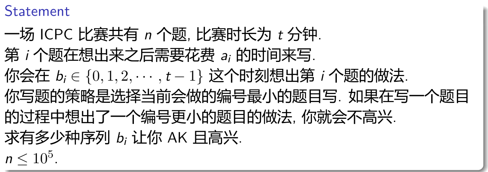
不妨设$t’=t-\sum b_i$，表示做完这$n$道题之后剩下的空余时间。我们将$t$分钟分为$n+t’$个时间段，接着按照编号从小到大考虑每道题目。
对于第一道题来说，它可以选择这$n+t’$个时间段中的任意一个，然后将其撑到$a_1$分钟，因此方案数为$n+t’$。对于第二道题，它有两种选择：要么选择一个新的时间段，要么在做第一道题的时候就被想出来，然后在第一道题做完之后立刻做第二道题。两种选择都会占去一个新的时间段，方案数为$n+t’-1+a_1$。
也就是说，对于第$i$道题来说，它会有两种选择：要么占去一个新的时间段，要么在做之前任意一道题的时候被想出来，然后一直等待直到有一个可用的时间段。当我们将这$n$道题都插入完毕的时候，剩下的那些时间段就是空闲时间，每段持续一分钟。
直接在序列上做会有一个问题：假设任务$j$在做任务$i$的时候被想出来了，但是任务$i$之后的每个时间段都被占满了，那么$j$就无法“顺延”到下一个没有用过的时间段。因此我们将序列当作一个环，同时在最后加入一个空闲时间段（为了方便计算答案）。可以看出，环上的任意一种方案都可以选择一个空闲位置作为最后添加的那个段断开。为了避免重复计数，我们约定在环上距离第一个位置最近的空闲段断开即可。因此，答案为
Amidakuji
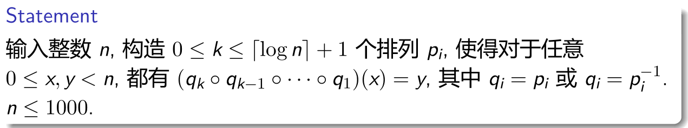
考虑如下构造：
当$n$是奇数的时候，令$p_{i,j}=j+2^i\bmod n$。可以看作每次要么不动，要么往左走$2^{i+1}$步。如果终点到起点距离为偶数那么可以直接走过去，否则这个距离加上$n$之后是偶数。
如果$n\bmod 4=0$，构造$p_0=(2,3,1,0,6,7,5,4,\cdots)$，接着套用奇数的构造。在第一步中，你可以选择将当前的下标变为奇数还是偶数，从而使得接下来到终点的距离一定是偶数。
如果$n\bmod 4=2$，构造$p_0=(2,3,1,0,\cdots, n-2, n-1),p_1=(0,1,2,\cdots, n-6, n-5,n-2,n-1,n-3,n-4)$，原理与$n\bmod 4=0$类似。
Arcs on a Circle
Classic Towers
将这个过程倒过来，从终止状态推到初始状态。设$f(a,b,c,p)$表示最大的$a+b+c$个盘子已经放好了，并且此时剩下的所有盘子都堆在第$p$根柱子上是否可行。转移的时候考虑$k$在二进制下的这一位，如果此时剩下的盘子中最大的盘子已经归位，那么这个最大的盘子不需要移动，否则需要花费$2^t$步移动这个盘子。根据$k$的这一位来决定是否归位。
Clique
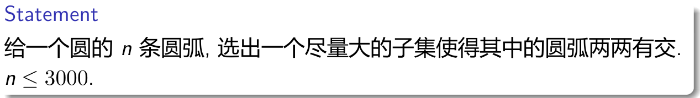
选中的圆弧中最短的圆弧是哪个，那么剩下可能被选的圆弧只有以下几种
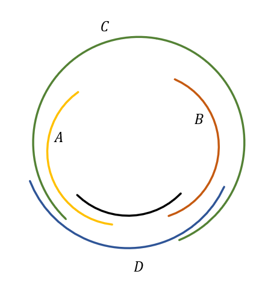
黑色的圆弧代表被选中的圆弧，由于这段圆弧是最短的，因此不存在被它完全包含的圆弧。
显然$D$这种圆弧一定满足条件，因此所有的$B$都会被选。
$C$同时与所有的$A$有交，也与所有的$B$有交，因此$C$也一定会被选。
因此，我们只需要考虑$A,B$这两种圆弧的选择情况。
我们给$A,B$圆弧的左右端点分别分配一个坐标$x_i,y_i$，那么问题转化为选择尽可能多的$A$类和$B$类圆弧，使得不存在一个$A$类圆弧$i$，一个$B$类圆弧$j$，使得$x_j<x_i$，同时$y_j<y_i$。
将所有圆弧按照$x$坐标排序之后线段树就可以了。
DFS Count
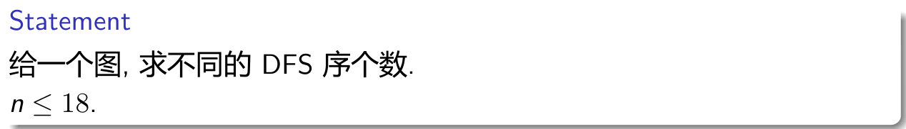
记$f(S,i)$表示$S$集合中的点已经访问过了，现在在$i$号点，仅考虑剩下能走到的点的DFS序个数。
记$g(S,i)$表示$S$集合中的点已经访问过了，现在在$i$号点，还能走到的点集。
倒着转移$f$，枚举与$i$相连的点$j$，有$f(S,i)=f(S,i)+f(S|j,j)\times f(S|g(S|j,j),j)$。
Evacuation
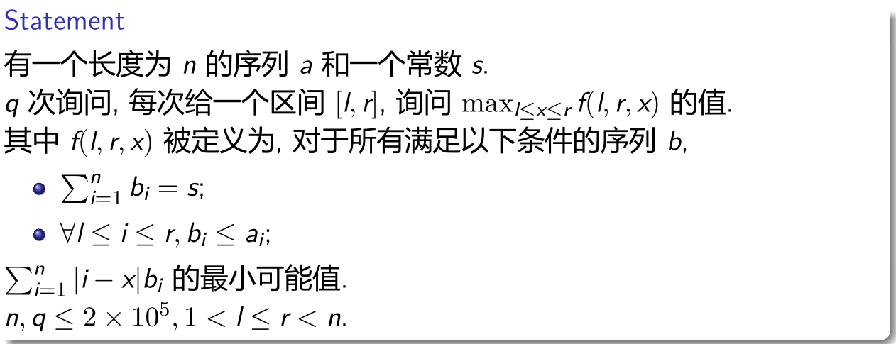
比较容易读错题，需要注意的是求的是$f$的最大值，以及$f$是对$1$到$n$的所有$b$求和而不是$l$到$r$。
当$x$在区间中点右侧时，可以发现$l$是没有用的，我们不妨设新的函数为$g(r,x)$。
将所有询问离线下来，对于一组询问，它要求的东西形如$\max\limits_{L\leq x\leq R}g(r,x)$，我们进行线段树分治。观察到$g$满足四边形不等式，我们对于线段树上的每个节点，将挂到这个节点上的所有$r$拿来做决策单调性就好了。
Games on DAG
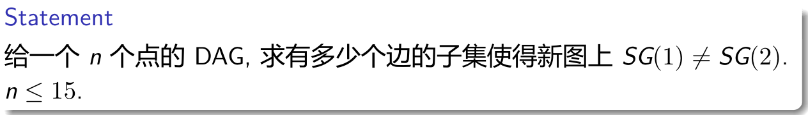
若两个点相连，那么它们的SG值一定不同，因此$1$和$2$之间一定没有边。
一种暴力的方法是枚举$n$的集合划分，$SG$相同的点被划分到同一个集合中，每个集合必须往每个比它SG值小的集合至少连一条边。
不妨考虑分层$dp$。记$f(S)$表示只考虑$S$集合时，$SG(1)=SG(2)$的方案数。枚举$U$，满足$U$中没有任何边，显然此时$U$中的所有点的$SG$都为$0$。接着我们将$S$集合中的点的$SG$值整体抬高$1$，即每个点会向$U$集合中至少一个点有连边。
Giant Penguin
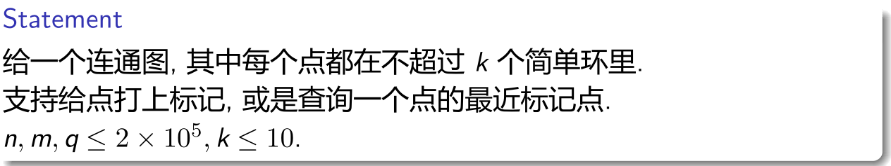
Graph Coloring
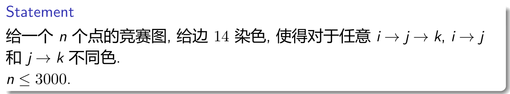
注意到${14\choose 7}>3000$，我们给每个点都分配一个不同的$14$位的二进制编号，满足恰有$7$个位置为$1$。对于两个点$i,j$，我们在$i$的编号中随便找到一位使得$i$这一位为$1$，但$j$这一位为$0$，将$i\rightarrow j$边染上此颜色即可。
Horrible Cycles
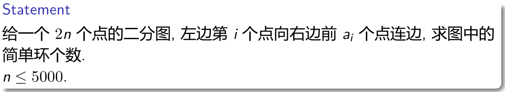
Inversions
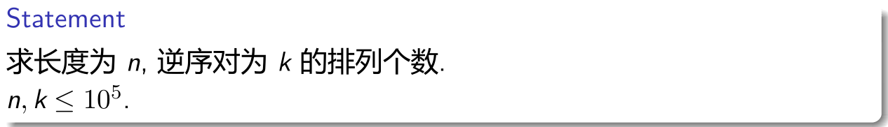
容易发现实际上要求的是，有$n$个数，第$i$个数不能大于$i-1$，求它们的和为$n$的方案数。
此时有两种方法，第一种是考虑生成函数，答案的生成函数为
$x-1$的$\ln$是调和级数，将这个式子$\ln$后再$\exp$回去即可。
另一种方法是考虑容斥，枚举哪些数不满足条件，问题转化为选出$i$个不同的数，使得它们的和为$j$的方案数，剩下的贡献是一个组合数。可以发现$i$不能大于$\sqrt j$。
将这个过程想象为一个序列，一开始为空，每次操作会将序列整体加上$1$，并选择是否要在序列的最后接上一个$1$，由于$i$不会超过$\sqrt n$，因此复杂度为$n\sqrt n$，实际上比$\exp$跑得快。
Jealous Split
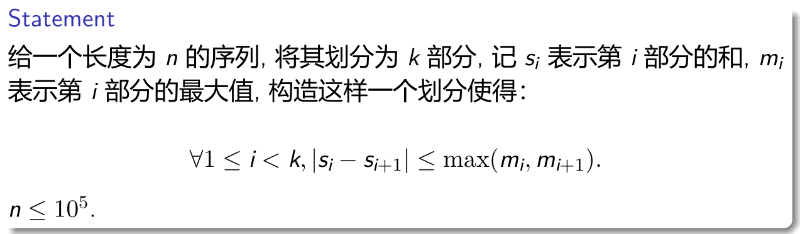
考虑任意一种不合法方案，我们通过移动划分点来使得它变得合法，可以发现调整之后每段的和的平方之和一定变小了。问题转化为将序列划分为$k$段，使得每段的和的平方之和尽量小。wqs二分即可。
LIS vs. LDS
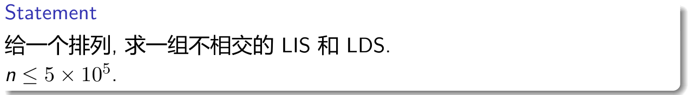

维护一棵线段树，下标为所选择的最后一个数的值。维护区间内最大的LIS以及其对应的两种$f$之和。
Match
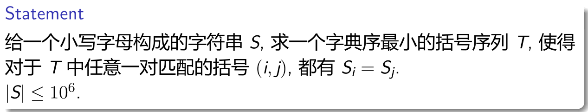
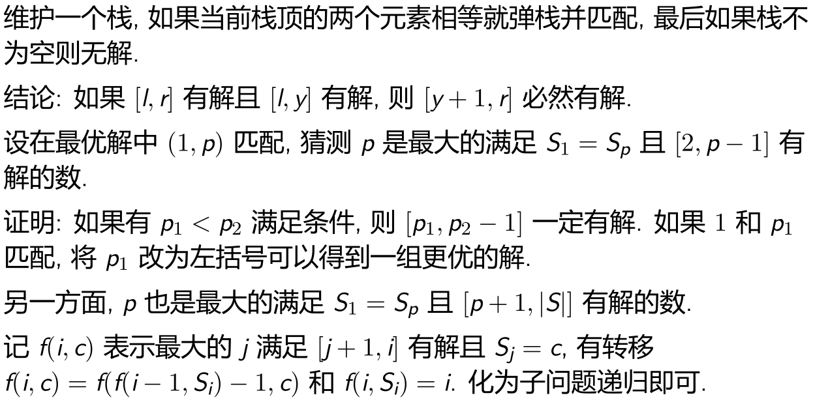
Policeman and a Tree
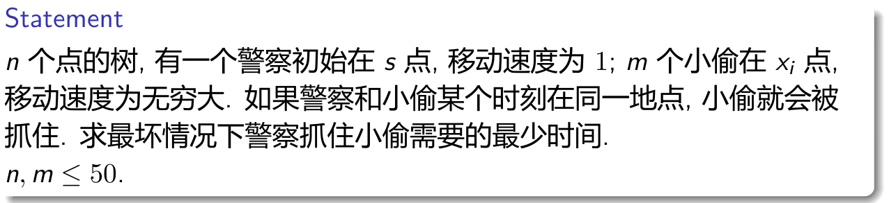
可以发现当前的状态只与警察上一步走的边、子树内的小偷个数、子树外的小偷个数有关。
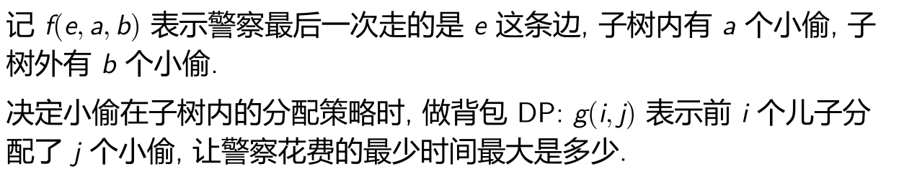
RPS Robots
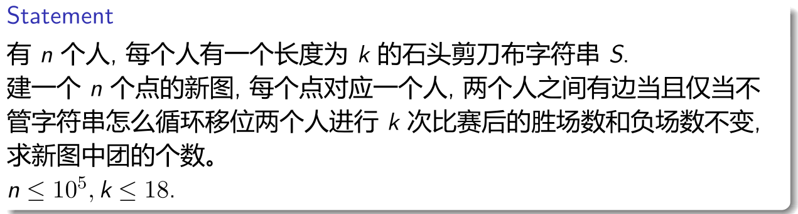
考虑对于两个人，如何判断这两个人之间是否有边。
我们将这两个人的序列看作一个多项式，$x^i$系数表示在第$i$轮这个人会出什么。
对于第一个人，我们记$R=1,S=\omega,P=\omega^2$，这里$\omega$表示三次单位根。
对于第二个人，我们记$R=1,S=\omega^2,T=\omega$。当两种状态相乘为$1$时代表平局，相乘为$\omega$时表示第一个人赢了，相乘为$\omega^2$时表示第二个人赢了。
因此本质上我们是将这两个多项式进行循环差卷积，即卷积之后第$i$项表示第一个人轮换$i$步之后的结果。
因此，两个人之间有边当且仅当$A(x)$与$B(x)^R$的循环卷积处处相等。这里$A(x)$表示第一个人的多项式，$B(x)$表示第二个人的多项式，$R$表示翻转，因为我们要做差卷积。
考虑IDFT的本质，实际上它是将$n$个点值代入了原多项式。由于最终求出来的多项式要处处相等，这意味着代入$n$个点值之后求出来的值也相等，满足条件的多项式必然为一个常数多项式，即只有常数项有值，其它项都为$0$。
设$B(x)=\sum\frac{1}{b_i}x^i$，即$b_i$表示第$i$项的系数的共轭，注意到
由于我们只需要判断此多项式DFT后每一项是否为$0$，因此可以忽略最开始的$\omega_k^j$，可以发现我们可以直接将第二个人的多项式使用第一个人的系数，即$R=1,S=\omega,P=\omega^2$，同时也不用进行翻转。
对于每个人我们都代入此系数，然后做一遍DFT，将除开常数项以外的每一位都看作二进制下的$1$或$0$，$1$表示这个数不为$0$，$0$表示这个数为$0$。此时两个人有边当且仅当这两个人的二进制数与起来之后是$0$。
问题转化为选择尽可能多的数，使得它们与起来之后为$0$。记$f(S)$表示所选数或起来为$S$时能选的最多的数的数量，转移时枚举下一个数$T$使得$S$和$T$与起来为$0$即可。
Search Engine
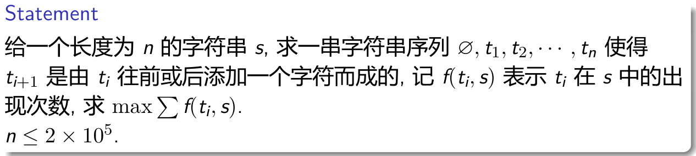
如果是往前添加字符，要么是在后缀树上不动（当前串的$len$小于当前节点的$maxlen$），要么是走向某个儿子。如果是往后添加字符，就是走DAG上的边。
如果我们能在当前节点待下去，那么一定会一直待着，因为这样出现次数一定不会更劣，可以发现没走一步都必然会导致$len$的增加，因此它是无环的，直接$dp$即可。
Simple Counting Problem
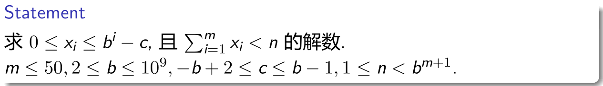
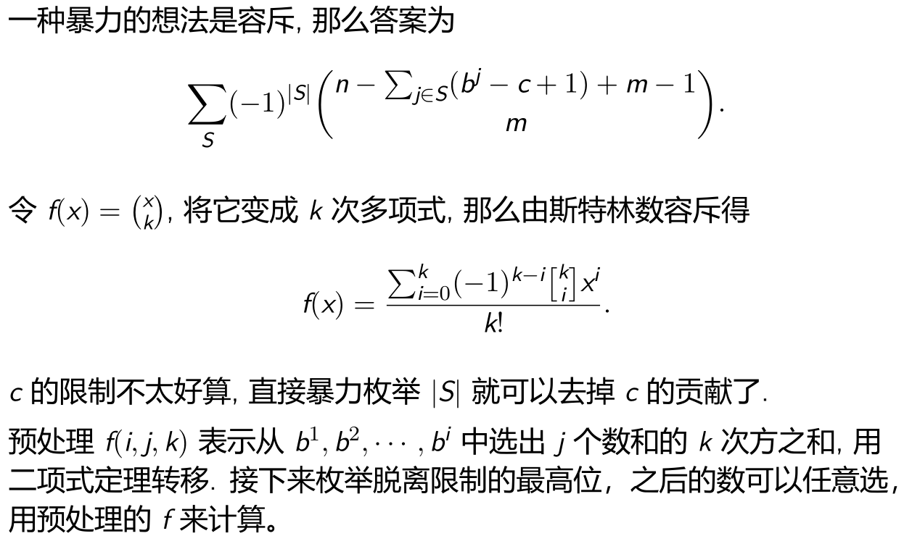
本质上我们需要计算的是$n-\sum_{j\in S}(b^j-c+1)+m-1$的$0$到$m$次方之和，由于$c$是常数，因此枚举$|S|$之和就可以将$-c+1$从$\sum$里面提出来。问题转化为求$\sum_S(\sum_{j\in S}b^j)^k$。只需要满足$b^j$的和小于$n+|S|(c-1)$即可。这个可以通过数位$dp$求出来。
瞎胡的
The Karting

线头dp，设$f(i,j,k)$表示前$i$个点中选择了$j$个点，此时还有$k$条路径未匹配时的最大收益。

Tree Nesting
设$f(i,j,s)$表示考虑了$S$中$i$号点的子树，其中$i$对应$T$的$j$号点，$i$的子树对应$T$的$s$集合中的点的方案数。转移的时候需要子集卷积。注意答案需要除掉$T$自同构的方案数，因为我们默认$T$有根，并且子树有顺序。
Unicyclic Graph Counting
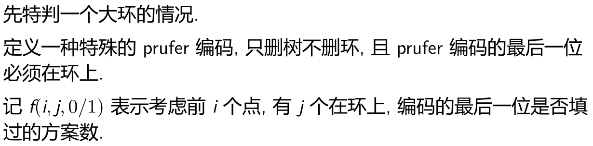
如果$a$点在环上，并且是最后一个填过的数，那么它对答案的贡献为
这里环长为$len$，注意环可以翻转。$b$代表所有环外的点，$c$表示所有环上的点。分治NTT即可。
Wise Man
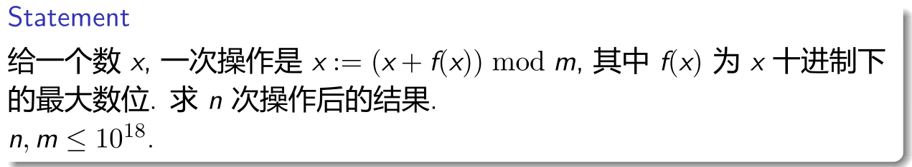
记$g(k,t,x)$表示当前数为$x(<10)$，每一次会给$x$加上$\max(k,f(x))$，超过$10^t$时进行的操作次数以及个位数是多少。
从低位到高位一步步地将$x$变为$\cdots00\cdots0x$的形式，最后再从最高位到最低位依次确定答案即可。
Yet Another Minimization Problem
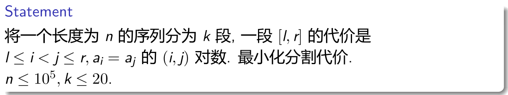
决策单调性，难点在于如何计算一段区间的答案。
可以使用类似莫队的方法，维护两个全局指针$l,r$，需要计算$[l,r]$的时候直接将上一次计算之后的$l,r$暴力用类似莫队的方法移过来即可，复杂度可以证明是对的。